ADSL <- haven::read_sas("./data/adam/adsl.sas7bdat")
ADSL <- ADSL |>
dplyr::mutate(TRTA=ARM)14 ggplot2 in R with CDISC ADaM Examples
15 Introduction
This tutorial is a step-by-step guide to ggplot2 in R, designed to take you from beginner to advanced, using CDISC ADaM-style datasets throughout.
ADSL: Subject-level dataADLB: Laboratory dataADVS: Vital signs (optional example)ADTTE: Time-to-event data (e.g. PFS)
These are simulated examples with ADaM-like structures and variable names. In a real project you would replace them with your actual ADSL/ADLB/ADTTE datasets.
We will cover:
- Basic Grammar of Graphics concepts
- Building plots layer by layer with
ggplot() - Common geoms: points, lines, bars, histograms, boxplots
- Aesthetics: color, shape, size, linetype
- Faceting, scales, themes, coordinates
- Combining
dplyr+ggplot2in a tidy ADaM workflow - Advanced: annotations, secondary axes, simple KM plot from ADTTE
- Saving plots for reports/presentations
16 Creating Simulated ADaM-Style Data
In this section we create small ADaM-like datasets entirely in R so the tutorial is self-contained.
16.1 ADSL: Subject-Level Data
16.2 ADLB: Laboratory Data (e.g. ALT)
We simulate longitudinal ALT values (PARAMCD = "ALT") at multiple visits:
ADLB <- haven::read_sas("./data/adam/adlbhy.sas7bdat") |>
dplyr::filter(PARAMCD == "ALT")16.3 ADTTE: Time-to-Event Data (e.g. PFS)
We simulate a simple ADTTE:
PARAMCD = "PFS"AVAL: time (months)CNSR: censor flag (0 = event, 1 = censored)
ADTTE <- ADSL %>%
select(STUDYID, USUBJID, ARM,TRTA, SEX, AGE) %>%
mutate(
PARAMCD = "PFS",
PARAM = "Progression-Free Survival (Months)",
# Arm-specific exponential rates
rate = case_when(
ARM == "Placebo" ~ 0.12,
ARM == "Dose 1" ~ 0.09,
TRUE ~ 0.07
),
AVAL = rexp(n(), rate = rate),
AVAL = pmin(AVAL, 36), # administrative censoring at 36 months
CNSR = if_else(AVAL >= 36, 1, 0)
) %>%
select(-rate)
ADTTE %>% head()# A tibble: 6 × 10
STUDYID USUBJID ARM TRTA SEX AGE PARAMCD PARAM AVAL CNSR
<chr> <chr> <chr> <chr> <chr> <dbl> <chr> <chr> <dbl> <dbl>
1 CDISCPILOT01 01-701-1015 Placebo Plac… F 63 PFS Prog… 7.03 0
2 CDISCPILOT01 01-701-1023 Placebo Plac… M 64 PFS Prog… 4.81 0
3 CDISCPILOT01 01-701-1028 Xanomel… Xano… M 71 PFS Prog… 19.0 0
4 CDISCPILOT01 01-701-1033 Xanomel… Xano… M 74 PFS Prog… 0.451 0
5 CDISCPILOT01 01-701-1034 Xanomel… Xano… F 77 PFS Prog… 0.803 0
6 CDISCPILOT01 01-701-1047 Placebo Plac… F 85 PFS Prog… 2.64 0With these datasets we can now explore ggplot2 concepts in an ADaM context.
17 Grammar of Graphics with ADaM
The basic idea of ggplot2 (Grammar of Graphics):
- Data: ADSL / ADLB / ADTTE
- Aesthetics (
aes): how variables map to x, y, color, etc. - Geoms: geometric objects (points, lines, bars, etc.)
- Scales, facets, coordinates, theme: control look and structure
The general pattern:
ADSL <- haven::read_sas("./data/adam/adsl.sas7bdat")
ggplot(data = ADSL, aes(x = AGE, y = BMIBL)) +
geom_point()We will start with subject-level plots from ADSL, then move to longitudinal labs from ADLB, and finally to ADTTE.
18 Basic Plots from ADSL (Beginner Level)
18.1 Scatterplot: AGE vs BMIBL
ggplot(ADSL, aes(x = AGE, y = BMIBL)) +
geom_point() +
labs(
title = "Scatterplot of Baseline BMI vs Age",
x = "Age (Years)",
y = "Baseline BMI (kg/m^2)"
)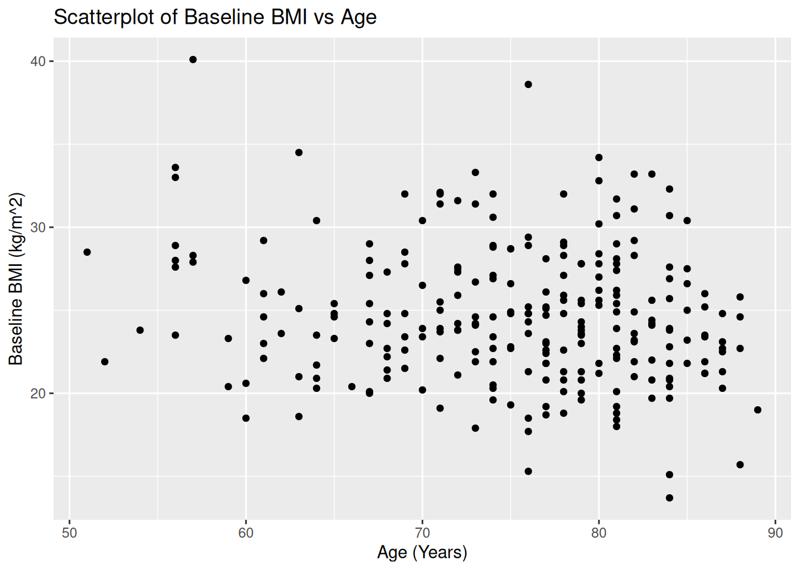
18.1.1 Mapping vs Setting Aesthetics
- Mapping (inside
aes()): color/shape/size depend on data (e.g.ARM). - Setting (outside
aes()): fixed values.
Map ARM to color:
ggplot(ADSL, aes(x = AGE, y = BMIBL, color = TRT01A)) +
geom_point(size = 2.5, alpha = 0.8) +
labs(
title = "Baseline BMI vs Age by Treatment Arm",
color = "Treatment Arm",
x = "Age (Years)",
y = "Baseline BMI (kg/m^2)"
)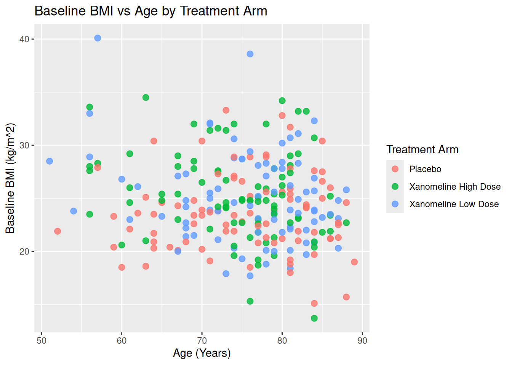
Set color manually (not based on data):
ggplot(ADSL, aes(x = AGE, y = BMIBL)) +
geom_point(color = "steelblue", size = 2.5, alpha = 0.8) +
labs(
title = "Baseline BMI vs Age (All Arms)",
x = "Age (Years)",
y = "Baseline BMI (kg/m^2)"
)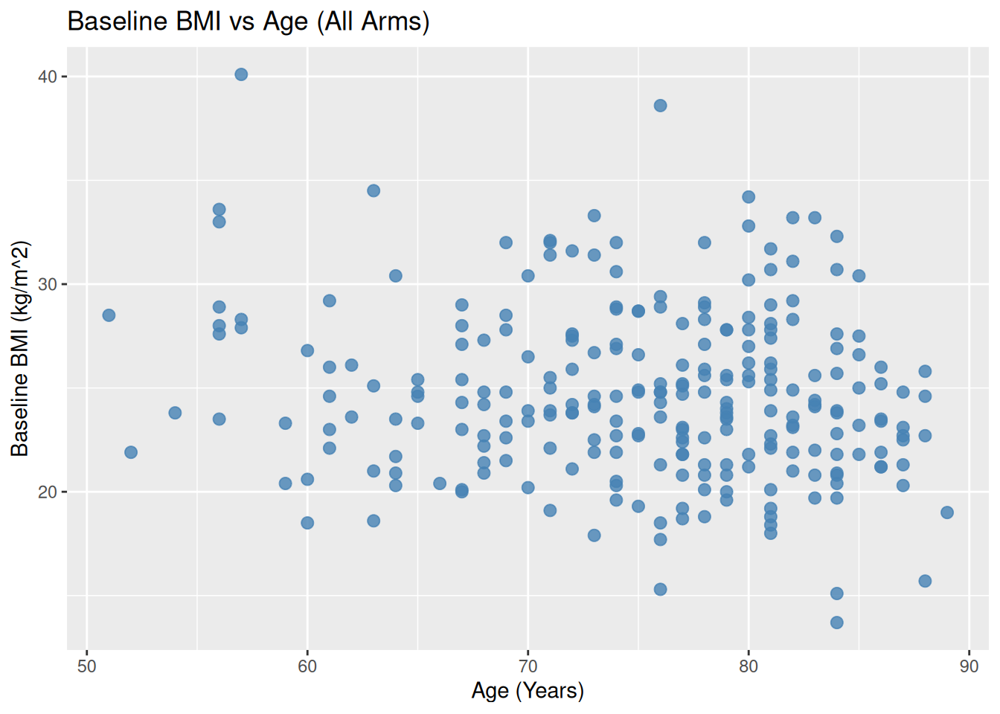
18.2 Bar Plot: Subject Counts per Arm
Using ADSL, we can show how many subjects per arm:
ggplot(ADSL, aes(x = TRT01A)) +
geom_bar(fill = "skyblue", color = "black") +
labs(
title = "Number of Subjects per Treatment Arm",
x = "Treatment Arm",
y = "Count of Subjects"
)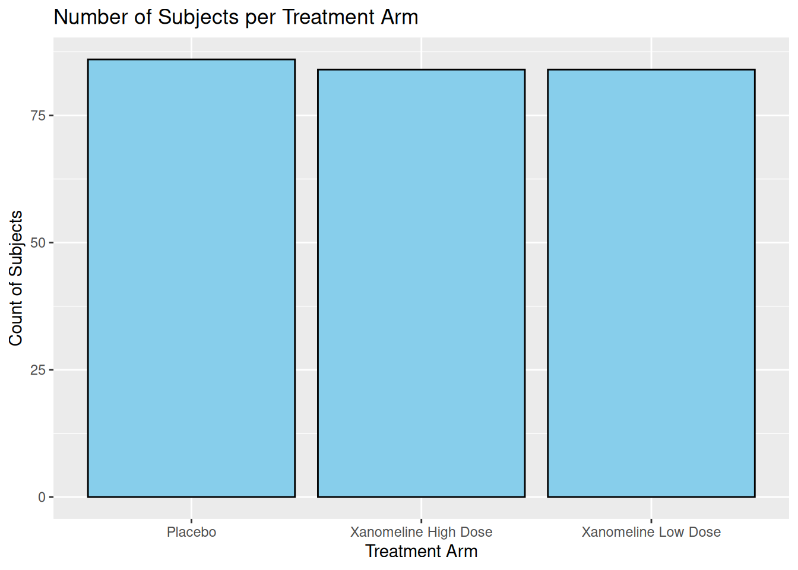
If you pre-compute counts (e.g. for TLG), use geom_col():
adsl_counts <- ADSL %>%
count(TRT01A, name = "n")
adsl_counts# A tibble: 3 × 2
TRT01A n
<chr> <int>
1 Placebo 86
2 Xanomeline High Dose 84
3 Xanomeline Low Dose 84ggplot(adsl_counts, aes(x = TRT01A, y = n)) +
geom_col(fill = "steelblue") +
labs(
title = "Number of Subjects per Treatment Arm",
x = "Treatment Arm",
y = "Count of Subjects"
)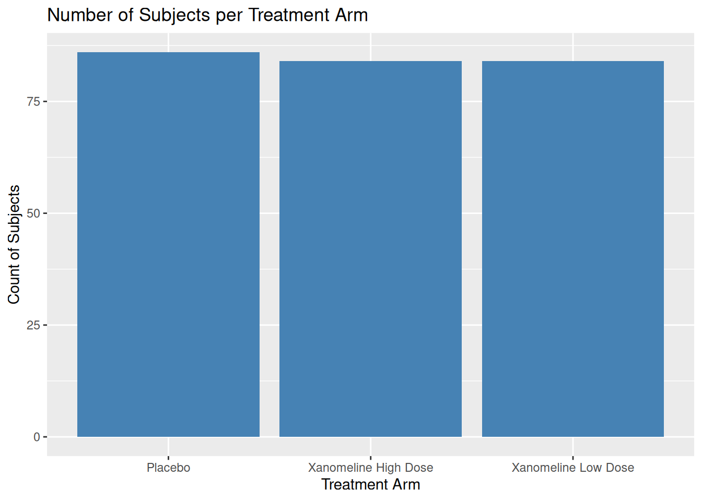
18.3 Histogram and Density: Age Distribution
Histogram of AGE:
ggplot(ADSL, aes(x = AGE)) +
geom_histogram(binwidth = 5, fill = "lightgreen", color = "white") +
labs(
title = "Age Distribution (ADSL)",
x = "Age (Years)",
y = "Frequency"
)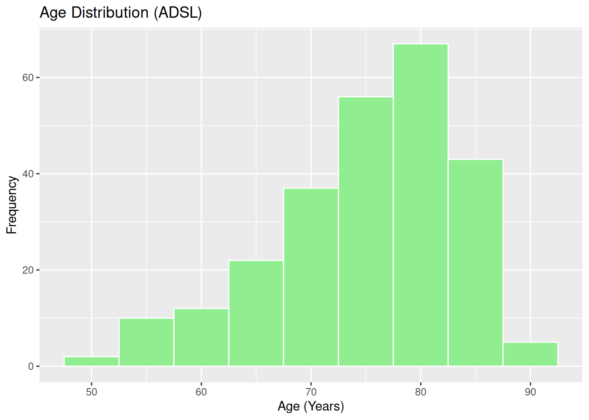
Density plot:
ggplot(ADSL, aes(x = AGE)) +
geom_density(fill = "orange", alpha = 0.6) +
labs(
title = "Age Density (ADSL)",
x = "Age (Years)",
y = "Density"
)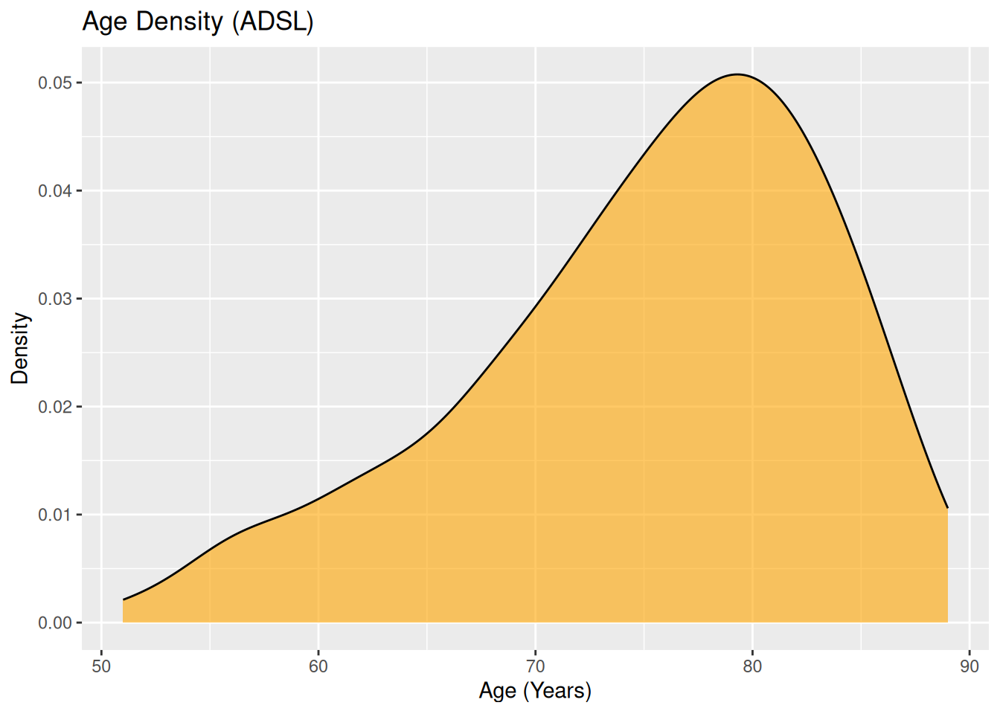
18.4 Boxplot: BMIBL by ARM
Boxplots are useful in CSR or listings to compare distributions across arms.
ggplot(ADSL, aes(x = TRT01A, y = BMIBL)) +
geom_boxplot(fill = "lightgray") +
labs(
title = "Baseline BMI by Treatment Arm",
x = "Treatment Arm",
y = "Baseline BMI (kg/m^2)"
)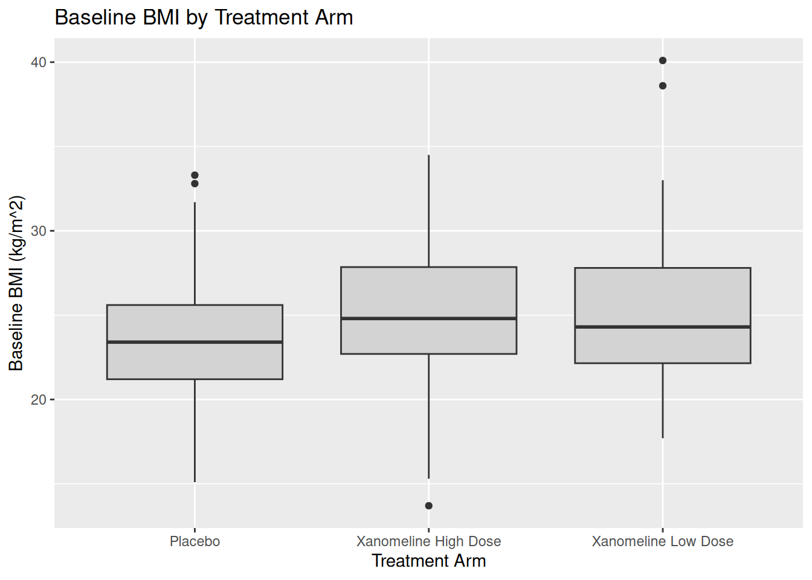
You can combine boxplot with jittered points:
ggplot(ADSL, aes(x = TRT01A, y = BMIBL)) +
geom_boxplot(fill = "lightgray", outlier.shape = NA) +
geom_jitter(width = 0.15, alpha = 0.6, color = "blue") +
labs(
title = "Baseline BMI by Treatment Arm (with Individual Subjects)",
x = "Treatment Arm",
y = "Baseline BMI (kg/m^2)"
)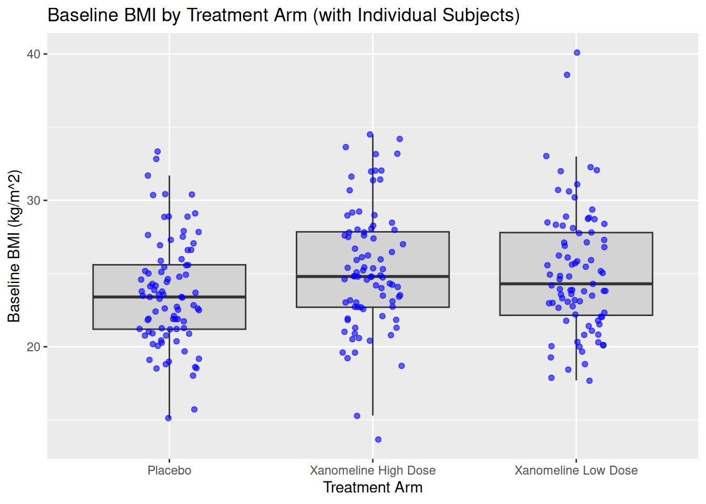
19 Longitudinal Plots from ADLB (Intermediate)
Now we use ADLB to illustrate time course plots, which are common in clinical reports.
19.1 Line Plot: Mean ALT Over Time by ARM
First summarise ADLB:
adlb_alt_summary <- ADLB %>%
group_by(TRTA, AVISITN,AVISIT) %>%
summarise(
mean_ALT = mean(AVAL,na.rm=TRUE),
sd_ALT = sd(AVAL,na.rm=TRUE),
n = n(),
se_ALT = sd_ALT / sqrt(n),
.groups = "drop"
)
adlb_alt_summary$AVISIT <- factor(adlb_alt_summary$AVISIT, levels=unique(adlb_alt_summary$AVISIT[order(adlb_alt_summary$AVISITN)]))
adlb_alt_summary# A tibble: 27 × 7
TRTA AVISITN AVISIT mean_ALT sd_ALT n se_ALT
<chr> <dbl> <fct> <dbl> <dbl> <int> <dbl>
1 Placebo 0 " Baseline" 17.6 9.22 86 0.994
2 Placebo 2 " Week 2" 18.0 12.5 83 1.38
3 Placebo 4 " Week 4" 18.7 12.9 79 1.45
4 Placebo 6 " Week 6" 17.0 9.92 73 1.16
5 Placebo 8 " Week 8" 16.7 9.34 72 1.10
6 Placebo 12 " Week 12" 18 9.16 67 1.12
7 Placebo 16 " Week 16" 17.1 7.39 68 0.897
8 Placebo 20 " Week 20" 16.1 6.56 65 0.814
9 Placebo 24 " Week 24" 17.9 15.6 57 2.07
10 Xanomeline High Dose 0 " Baseline" 19.2 10.0 84 1.10
# ℹ 17 more rowsLine plot with error bars:
ggplot(adlb_alt_summary,
aes(x = AVISIT, y = mean_ALT, group = TRTA, color = TRTA)) +
geom_line(linewidth = 1.1) +
geom_point(size = 2.5) +
geom_errorbar(
aes(ymin = mean_ALT - se_ALT, ymax = mean_ALT + se_ALT),
width = 0.15
) +
labs(
title = "Mean ALT Over Time by Treatment Arm",
x = "Visit",
y = "Mean ALT (U/L)",
color = "Treatment Arm"
) +
theme_minimal()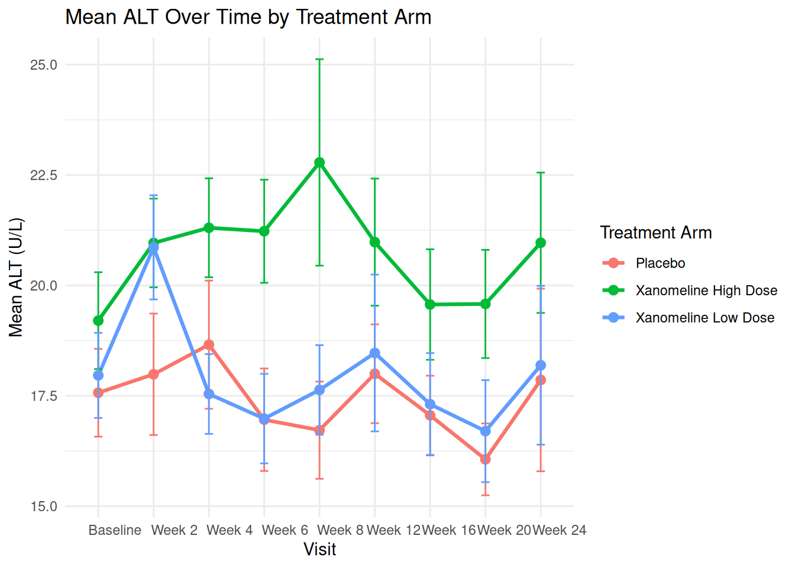
19.2 Individual Profiles (Spaghetti Plot)
To see variability, we can plot individual patients (subset to avoid overcrowding):
ADLB_sub <- ADLB |>
head(20)
ADLB_sub$AVISIT <- factor(ADLB_sub$AVISIT, levels=unique(ADLB_sub$AVISIT[order(ADLB_sub$AVISITN)]))
ggplot(ADLB_sub,
aes(x = AVISIT, y = AVAL, group = USUBJID, color = TRTA)) +
geom_line(alpha = 0.6) +
geom_point(alpha = 0.6, size = 1.5) +
labs(
title = "Individual ALT Trajectories ",
x = "Visit",
y = "ALT (U/L)",
color = "Arm"
) +
theme_minimal() +
theme(legend.position = "bottom")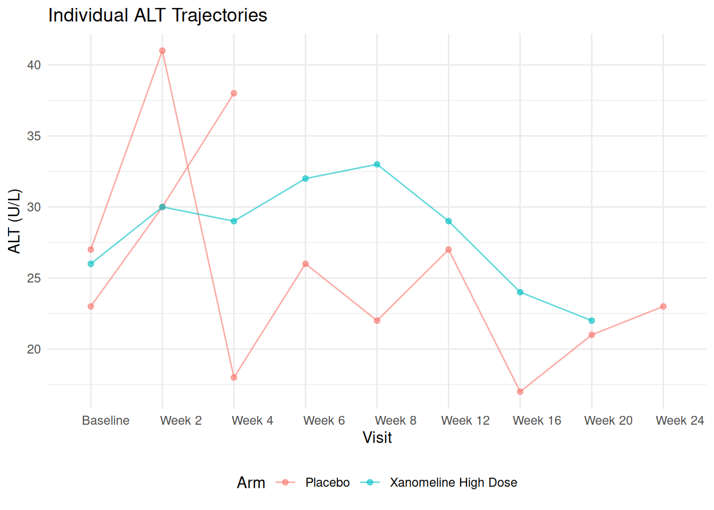
20 Faceting with ADaM Data
Faceting is useful when splitting results by subgroups, lab parameters, or regions.
Here we only have PARAMCD = "ALT", but we can pretend we have multiple parameters.
20.1 Example: Facet ALT by Sex
ggplot(adlb_alt_summary,
aes(x = AVISIT, y = mean_ALT, group = TRTA, color = TRTA)) +
geom_line(linewidth = 1) +
geom_point(size = 2) +
facet_wrap(~ TRTA) +
labs(
title = "Mean ALT Over Time – Faceted by Treatment TRTA",
x = "Visit",
y = "Mean ALT (U/L)",
color = "TRTA"
) +
theme_minimal()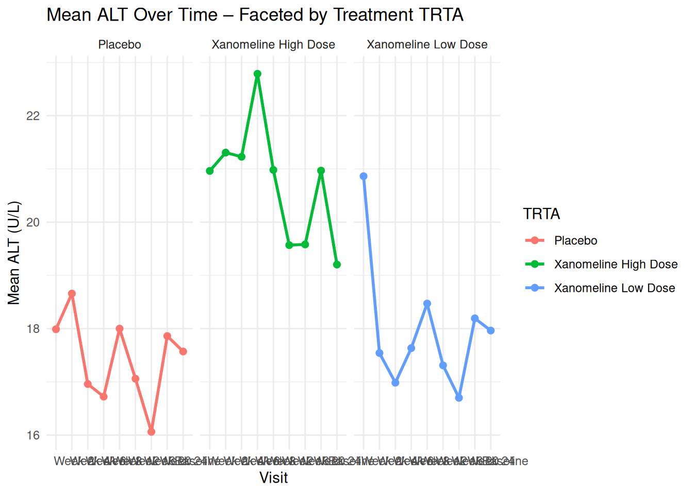
You can similarly facet by SEX, RACE, or any other ADSL variable once merged into ADLB.
21 Scales, Labels, and Themes in ADaM Context
21.1 Changing Axis Labels and Titles
ggplot(ADSL, aes(x = AGE, y = BMIBL, color = TRT01A)) +
geom_point(alpha = 0.8) +
labs(
title = "Baseline BMI vs Age by Treatment TRTA",
subtitle = "Simulated ADaM ADSL Data",
x = "Age (Years)",
y = "Baseline BMI (kg/m^2)",
color = "Treatment TRTA"
)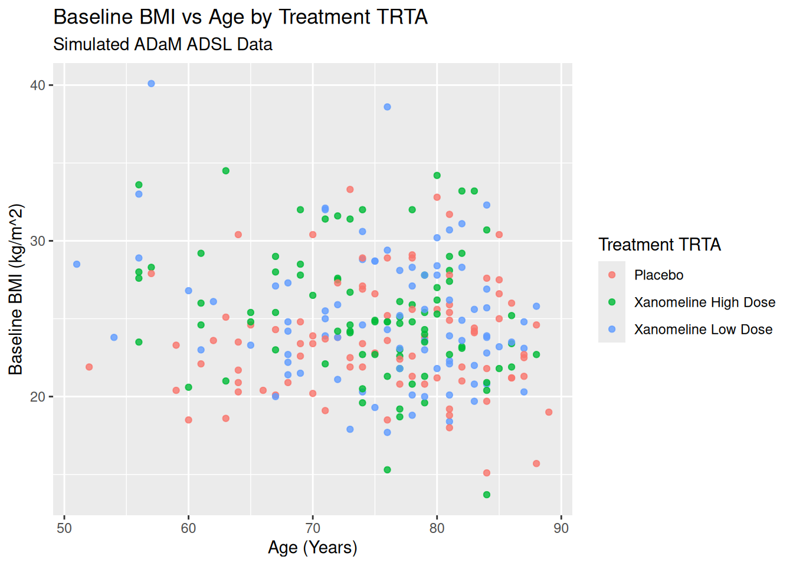
21.2 Controlling Color Scales
For discrete TRTA:
ggplot(ADSL, aes(x = AGE, y = BMIBL, color = TRT01A)) +
geom_point(size = 2.5) +
scale_color_brewer(palette = "Set1") +
labs(
title = "Custom Color Scale for TRTA",
color = "TRTA"
) +
theme_minimal()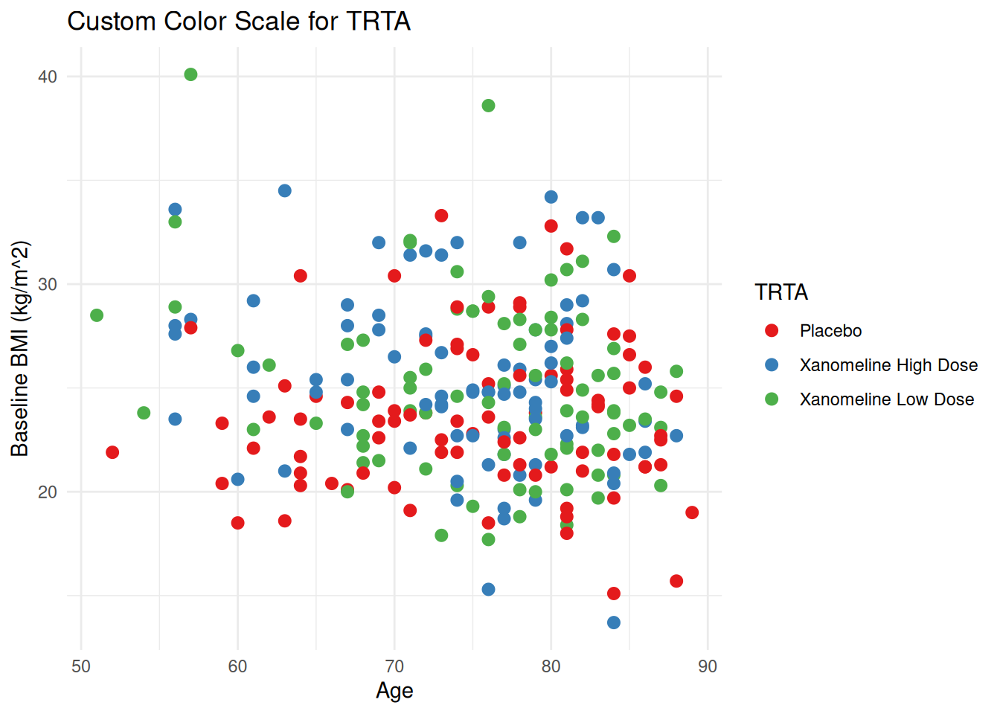
For continuous values (e.g. ALT):
ggplot(ADLB, aes(x = AGE, y = AVAL, color = AVAL)) +
geom_point(alpha = 0.7) +
scale_color_gradient(low = "lightyellow", high = "darkred") +
labs(
title = "ALT vs Age (Colored by ALT)",
x = "Age (Years)",
y = "ALT (U/L)",
color = "ALT"
) +
theme_minimal()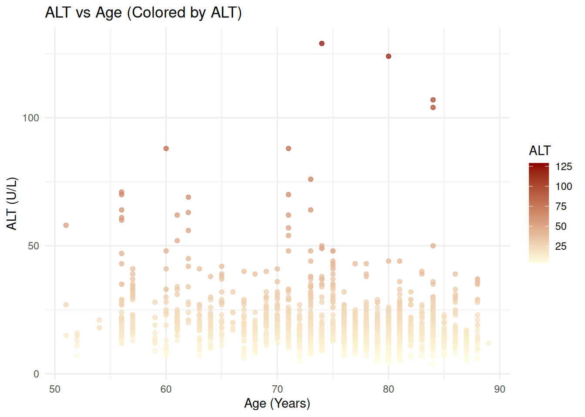
21.3 Transforming Scales (e.g., log10 ALT)
ggplot(ADLB, aes(x = AGE, y = AVAL, color = TRTA)) +
geom_point(alpha = 0.7) +
scale_y_log10() +
labs(
title = "ALT vs Age (Log10 ALT)",
x = "Age (Years)",
y = "ALT (U/L) – log10 scale",
color = "TRTA"
) +
theme_minimal()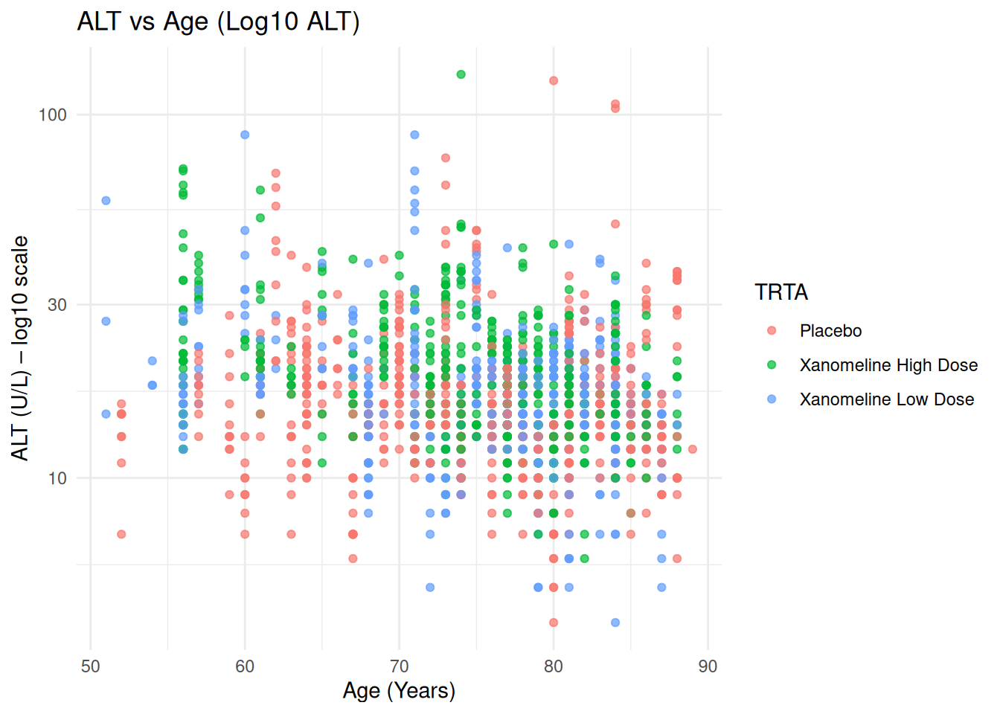
22 Themes and Publication-Style Graphics
22.1 Using Built-In Themes
p_base <- ggplot(ADSL, aes(x = AGE, y = BMIBL, color = TRT01A)) +
geom_point(size = 2.2, alpha = 0.8) +
labs(
title = "Baseline BMI vs Age by TRTA",
x = "Age (Years)",
y = "Baseline BMI"
)
p_base + theme_bw()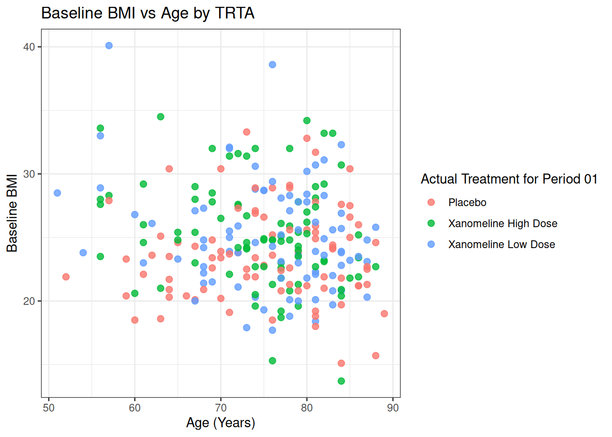
p_base + theme_minimal()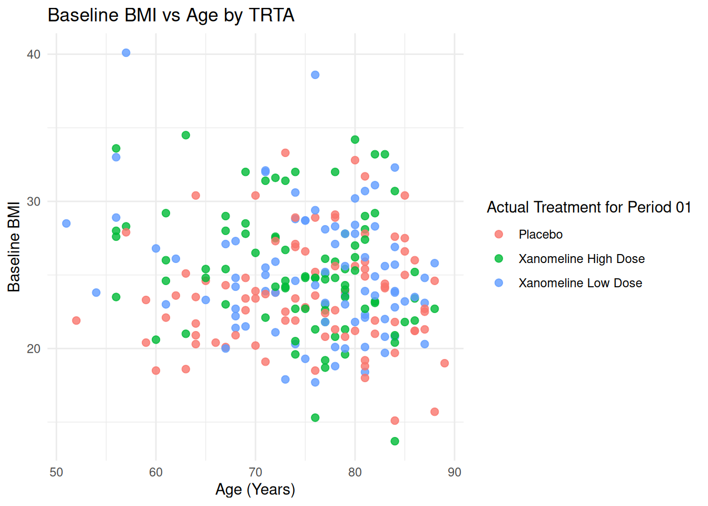
p_base + theme_classic()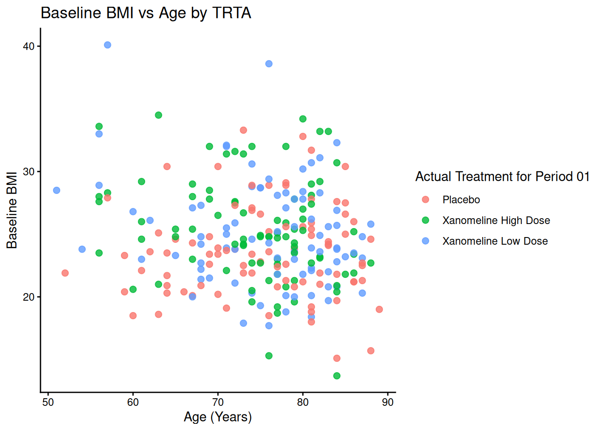
22.2 Custom Theme for Clinical Reports
theme_adam_pub <- function() {
theme_minimal(base_size = 11) +
theme(
plot.title = element_text(face = "bold", hjust = 0.5, size = 13),
axis.title = element_text(face = "bold"),
panel.grid.major = element_line(color = "grey85"),
panel.grid.minor = element_blank(),
legend.position = "bottom",
legend.title = element_text(face = "bold")
)
}
ADLB$AVISIT <- factor(ADLB$AVISIT, levels=unique(ADLB$AVISIT[order(ADLB$AVISITN)]))
ggplot(ADLB, aes(x = AVISIT, y = AVAL, color = TRTA)) +
geom_boxplot() +
labs(
title = "ALT Distribution by Visit and TRTA",
x = "Visit",
y = "ALT (U/L)",
color = "TRTA"
) +
theme_adam_pub()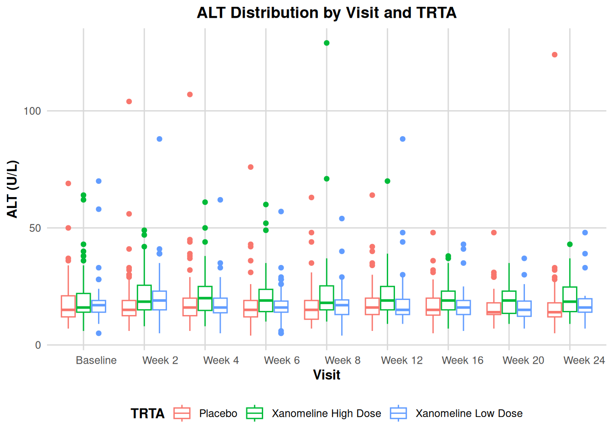
23 Coordinates and Positions
23.1 Flipping Coordinates: Boxplot of BMI by Sex
ggplot(ADSL, aes(x = SEX, y = BMIBL)) +
geom_boxplot(fill = "lightblue") +
coord_flip() +
labs(
title = "Baseline BMI by Sex",
x = "Sex",
y = "Baseline BMI"
)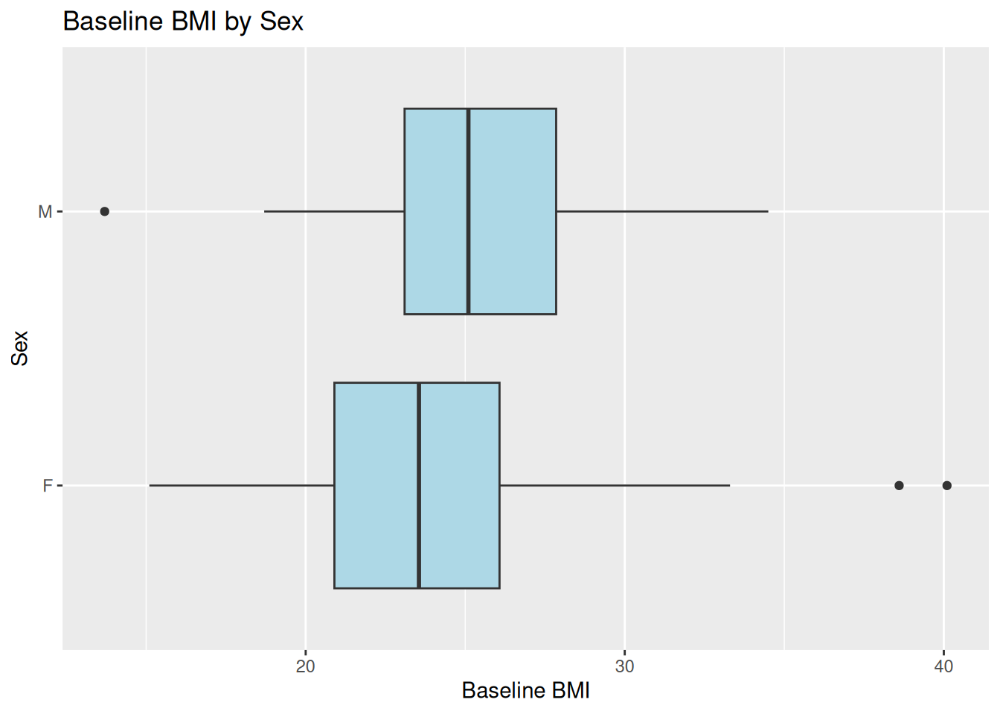
23.2 Stacked vs Dodged Bar Plots: TRTA by SEX
ggplot(ADSL, aes(x = TRTA, fill = SEX)) +
geom_bar(position = "stack") +
labs(
title = "Subjects by Treatment and Sex (Stacked)",
x = "TRTA",
y = "Count",
fill = "Sex"
)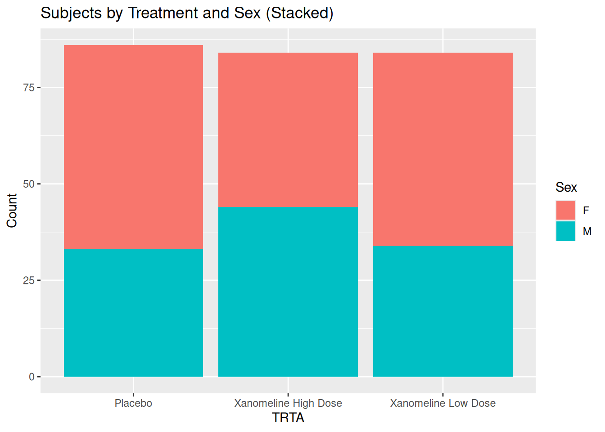
ggplot(ADSL, aes(x = TRTA, fill = SEX)) +
geom_bar(position = position_dodge(width = 0.8)) +
labs(
title = "Subjects by Treatment and Sex (Dodged)",
x = "TRTA",
y = "Count",
fill = "Sex"
)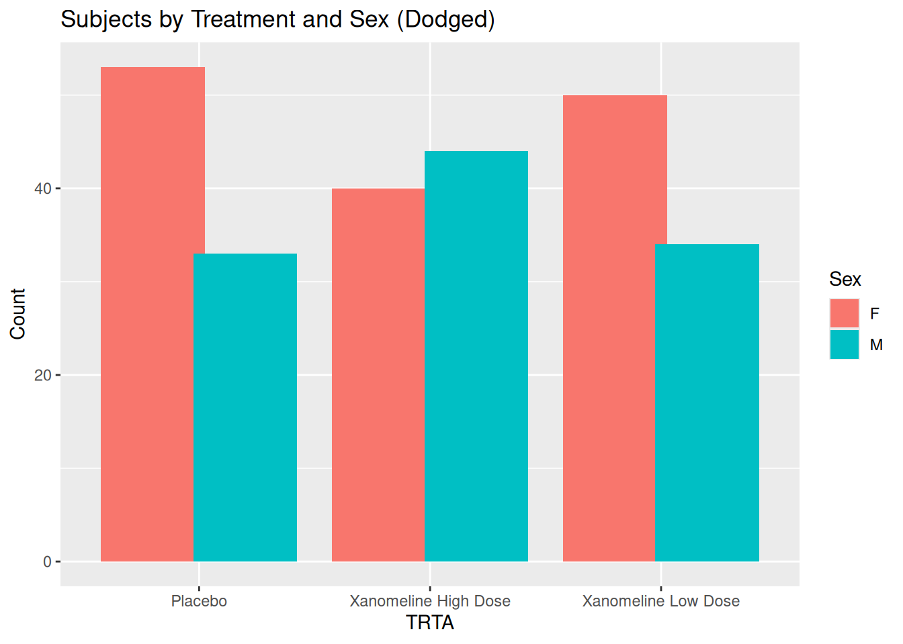
24 Adding Statistical Layers
24.1 Linear Regression: BMIBL vs AGE
ggplot(ADSL, aes(x = AGE, y = BMIBL)) +
geom_point(alpha = 0.7) +
stat_smooth(method = "lm", se = TRUE, color = "red") +
labs(
title = "Regression of Baseline BMI on Age",
x = "Age (Years)",
y = "Baseline BMI"
) +
theme_minimal()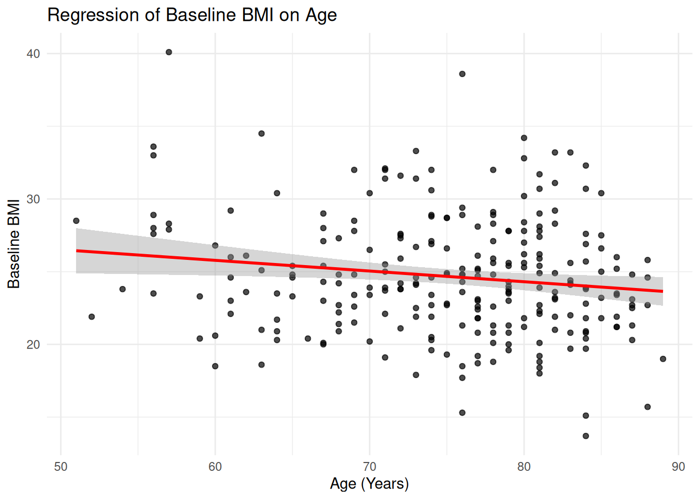
24.2 Summaries: Mean ALT ± SD per Visit and TRTA
We already computed adlb_alt_summary. Plot mean ± SD:
ggplot(adlb_alt_summary,
aes(x = AVISIT, y = mean_ALT, color = TRTA, group = TRTA)) +
geom_point(size = 2.5) +
geom_line() +
geom_errorbar(
aes(ymin = mean_ALT - sd_ALT, ymax = mean_ALT + sd_ALT),
width = 0.2, alpha = 0.7
) +
labs(
title = "Mean ALT ± SD by Visit and TRTA",
x = "Visit",
y = "ALT (U/L)",
color = "TRTA"
) +
theme_minimal()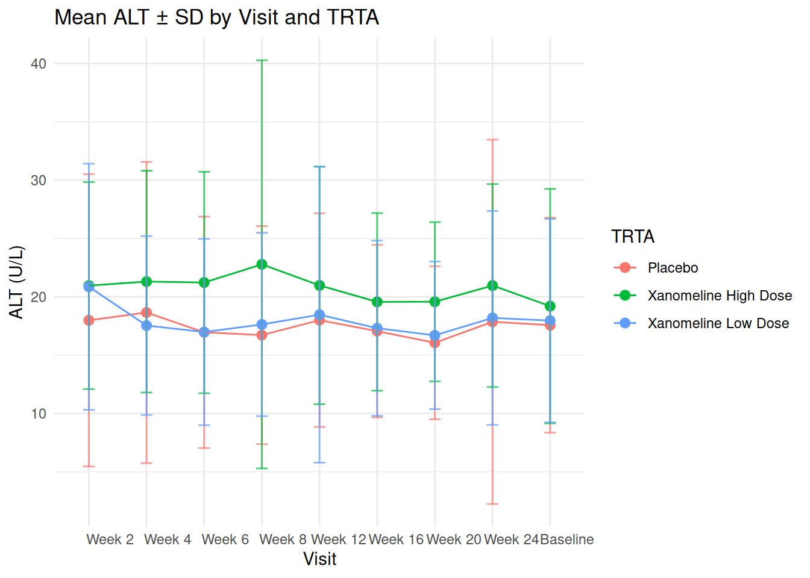
25 Tidy Workflow: dplyr + ggplot2 with ADaM
A very common pattern in clinical reporting:
- Start from ADaM dataset
- Filter / summarise with
dplyr - Plot with
ggplot2
Example: Mean BMI by TRTA and SEX:
ADSL %>%
group_by(TRTA, SEX) %>%
summarise(
mean_BMIBL = mean(BMIBL),
sd_BMIBL = sd(BMIBL),
n = n(),
.groups = "drop"
) %>%
ggplot(aes(x = TRTA, y = mean_BMIBL, fill = SEX)) +
geom_col(position = position_dodge(width = 0.8)) +
geom_errorbar(
aes(ymin = mean_BMIBL - sd_BMIBL, ymax = mean_BMIBL + sd_BMIBL),
position = position_dodge(width = 0.8),
width = 0.2
) +
labs(
title = "Mean Baseline BMI by Treatment TRTA and Sex",
x = "Treatment TRTA",
y = "Mean Baseline BMI",
fill = "Sex"
) +
theme_adam_pub()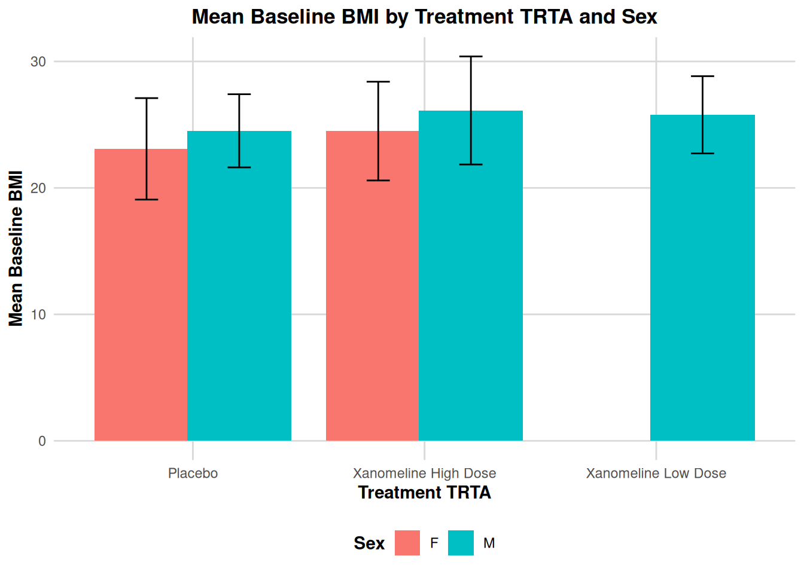
26 Advanced: Simple Kaplan–Meier Plot from ADTTE
In ADaM, ADTTE contains time-to-event information (e.g. PFS, OS).
Here we show a simple KM plot using survminer::ggsurvplot() which uses ggplot2 under the hood.
adtte_pfs <- ADTTE %>%
filter(PARAMCD == "PFS")
fit_pfs <- survfit(Surv(AVAL, 1 - CNSR) ~ TRTA, data = adtte_pfs)
km_plot <- ggsurvplot(
fit_pfs,
data = adtte_pfs,
conf.int = TRUE,
risk.table = TRUE,
risk.table.height = 0.25,
ggtheme = theme_minimal(),
legend.title = "TRTA",
legend.labs = levels(factor(adtte_pfs$TRTA)),
title = "Kaplan–Meier Curve for PFS by Treatment TRTA",
xlab = "Time (Months)",
ylab = "Progression-Free Survival Probability"
)
km_plot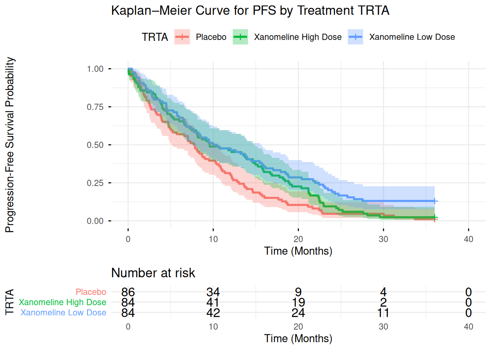
For a pure ggplot2 approach, you could extract the survfit summary into a data frame and use geom_step() manually, but ggsurvplot() is convenient and still fully compatible with ggplot theming.
27 Advanced: Annotations and Secondary Axes
27.1 Annotations on an ADaM Plot
Example: highlight older patients with high BMI:
ggplot(ADSL, aes(x = AGE, y = BMIBL)) +
geom_point(alpha = 0.7) +
annotate(
"rect", xmin = 70, xmax = 80,
ymin = 30, ymax = 40,
alpha = 0.1, fill = "red"
) +
annotate(
"text", x = 75, y = 41,
label = "Older, higher BMI
(Example region)",
size = 3, color = "red"
) +
labs(
title = "Annotations on ADSL Scatterplot",
x = "Age (Years)",
y = "Baseline BMI"
) +
theme_minimal()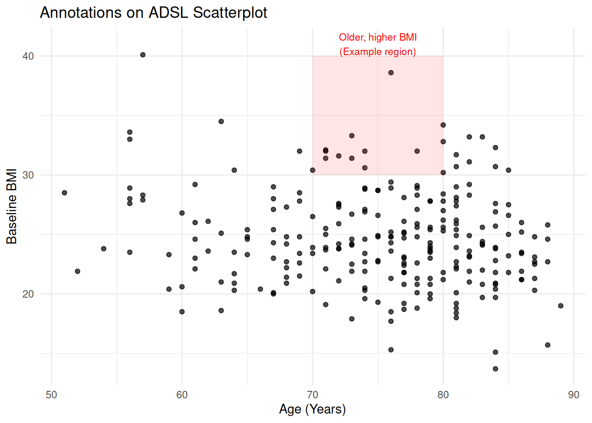
27.2 Secondary Axis (Use with Care)
ggplot2 allows secondary axes only if they are a simple transformation of the primary axis.
Example (purely illustrative) converting ALT to approximate multiple:
ggplot(adlb_alt_summary, aes(x = AVISIT, y = mean_ALT, group = TRTA, color = TRTA)) +
geom_line() +
geom_point() +
scale_y_continuous(
name = "ALT (U/L)",
sec.axis = sec_axis(~ . / 40, name = "ALT (x Upper Normal Limit)")
) +
labs(
title = "ALT Mean Over Time with Secondary Axis",
x = "Visit",
color = "TRTA"
) +
theme_minimal()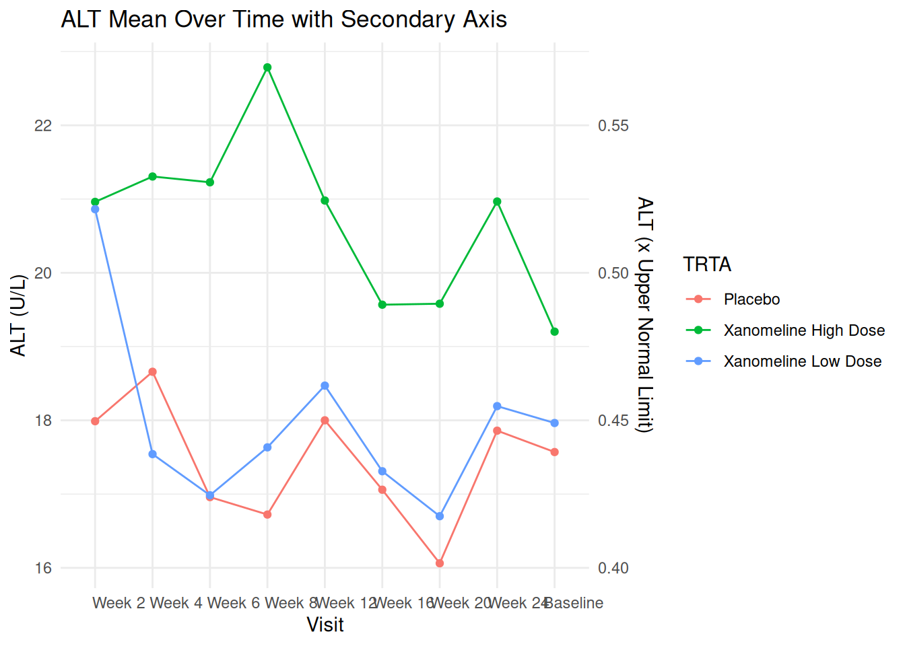
In production, ensure the secondary axis has a clinically correct and meaningful transformation.
28 Writing Reusable Plot Functions for ADaM
You can encapsulate standard plots (e.g., lab time course by TRTA) into functions.
plot_lab_timecourse <- function(adlb_df, paramcd = "ALT") {
df <- adlb_df %>%
filter(PARAMCD == paramcd) %>%
group_by(TRTA, AVISIT) %>%
summarise(
mean_aval = mean(AVAL),
se_aval = sd(AVAL) / sqrt(n()),
.groups = "drop"
)
ggplot(df, aes(x = AVISIT, y = mean_aval, color = TRTA, group = TRTA)) +
geom_line(linewidth = 1) +
geom_point(size = 2.5) +
geom_errorbar(
aes(ymin = mean_aval - se_aval, ymax = mean_aval + se_aval),
width = 0.15
) +
labs(
title = paste("Mean", paramcd, "Over Time by TRTA"),
x = "Visit",
y = paste("Mean", paramcd),
color = "TRTA"
) +
theme_adam_pub()
}
plot_lab_timecourse(ADLB, paramcd = "ALT")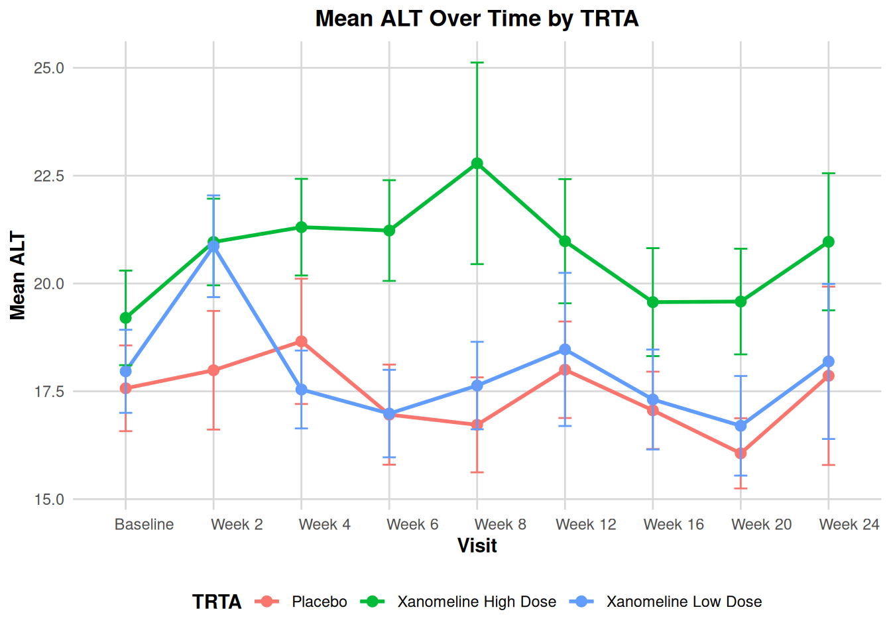
This approach is very powerful for building standardized plotting utilities for your ADaM pipeline.
29 Saving Plots for Reports
Use ggsave() to save plots for use in RTF, Word, or PowerPoint.
p <- ggplot(ADSL, aes(x = AGE, y = BMIBL, color = TRTA)) +
geom_point() +
labs(
title = "Baseline BMI vs Age by TRTA",
x = "Age (Years)",
y = "Baseline BMI"
) +
theme_adam_pub()
# Save as PNG
ggsave("bmi_vs_age_by_TRTA.png", plot = p, width = 6, height = 4, dpi = 300)
# Save as PDF
ggsave("bmi_vs_age_by_TRTA.pdf", plot = p, width = 6, height = 4)30 Introduction
This document walks through six common oncology graphs step by step, using the exact code you provided:
- Bar graph of sum of lesion diameters plus individual lesions
- Waterfall plot of best percentage change from baseline
- Swimmer plot for duration of response
- Spider plot (tumor trajectories over time)
- Kaplan–Meier survival curve
- Forest plot for subgroup hazard ratios
For each figure, we will:
- Build a simple example dataset in R (similar structure to what you’d get from ADaM like ADTR/ADTTE).
- Explain the main ggplot2 layers and options.
- Show the final code to generate the plot.
In a real clinical project, you would replace the toy data here with your ADaM datasets, but the plotting logic stays the same.
31 Figure 1 – Bar Graph with Individual Lesion Lines
This plot shows, for a single subject:
- Bars: Sum of Lesion Diameters (SUMLD) at each visit
- Lines/points: each individual lesion (tumor) over time
Clinically, this helps you see how the total tumor burden and individual lesions evolve across visits.
31.1 1.1 Create bar-graph data
We first build a small dataset with:
visit: visit labelSUMLD: sum of lesion diameterstrstresn_tumor1/2/3: individual lesion diameters
bar_data <- data.frame(
visit = c("Baseline", "Week 4", "Week 8", "Week 12", "Week 16"),
SUMLD = c(100, 85, 70, 65, 60), # Sum of Lesion Diameters
trstresn_tumor1 = c(50, 45, 35, 30, 28),
trstresn_tumor2 = c(30, 25, 20, 20, 18),
trstresn_tumor3 = c(20, 15, 15, 15, 14)
)
bar_data visit SUMLD trstresn_tumor1 trstresn_tumor2 trstresn_tumor3
1 Baseline 100 50 30 20
2 Week 4 85 45 25 15
3 Week 8 70 35 20 15
4 Week 12 65 30 20 15
5 Week 16 60 28 18 14In real ADaM:
visitcould map toAVISIT,SUMLDwould be a derived variable (sum of target lesions),trstresn_tumorXare separate lesions (often separate rows in ADTR; here we keep them as columns for simplicity).
31.2 1.2 Reshape to long format for lines
To draw multiple lesions as separate lines, we reshape the wide columns (trstresn_tumor1/2/3) into a long format using pivot_longer():
bar_data_long <- bar_data %>%
pivot_longer(
cols = starts_with("trstresn"),
names_to = "tuloc",
values_to = "trstresn"
)
bar_data_long# A tibble: 15 × 4
visit SUMLD tuloc trstresn
<chr> <dbl> <chr> <dbl>
1 Baseline 100 trstresn_tumor1 50
2 Baseline 100 trstresn_tumor2 30
3 Baseline 100 trstresn_tumor3 20
4 Week 4 85 trstresn_tumor1 45
5 Week 4 85 trstresn_tumor2 25
6 Week 4 85 trstresn_tumor3 15
7 Week 8 70 trstresn_tumor1 35
8 Week 8 70 trstresn_tumor2 20
9 Week 8 70 trstresn_tumor3 15
10 Week 12 65 trstresn_tumor1 30
11 Week 12 65 trstresn_tumor2 20
12 Week 12 65 trstresn_tumor3 15
13 Week 16 60 trstresn_tumor1 28
14 Week 16 60 trstresn_tumor2 18
15 Week 16 60 trstresn_tumor3 14tulocacts like tumor location / lesion identifier.
trstresnholds the lesion diameter for each visit–lesion combination.
31.3 1.3 Build the bar + line plot
Now we combine:
geom_col()for SUMLD (bars)geom_line()andgeom_point()for individual lesionsscale_y_continuous()with a secondary axis label (note: both axes use same numeric scale, only labels differ)
p1 <- ggplot() +
# Bars = Sum of lesion diameters per visit
geom_col(
data = bar_data,
aes(x = visit, y = SUMLD),
fill = "#4472C4",
width = 0.6,
alpha = 0.7
) +
# Lines = individual lesions
geom_line(
data = bar_data_long,
aes(x = visit, y = trstresn,
group = tuloc, color = tuloc),
size = 1.2
) +
# Points = individual lesion measurements
geom_point(
data = bar_data_long,
aes(x = visit, y = trstresn,
color = tuloc),
size = 3
) +
# Primary and secondary y-axes (same numeric scale)
scale_y_continuous(
name = "Lesion Diameter (mm)",
sec.axis = sec_axis(~., name = "Sum of Lesion Diameters (mm)")
) +
labs(
title = "Figure 1
Tumor Response in Individual Patients with Measurable Disease",
subtitle = "(ITT Population)
Subject: 1001",
x = "Visit",
color = "Tumor Location"
) +
theme_minimal() +
theme(
plot.title = element_text(hjust = 0.5, face = "bold", size = 14),
plot.subtitle = element_text(hjust = 0.5, size = 10),
axis.title = element_text(face = "bold", size = 11),
legend.position = "bottom"
)
p1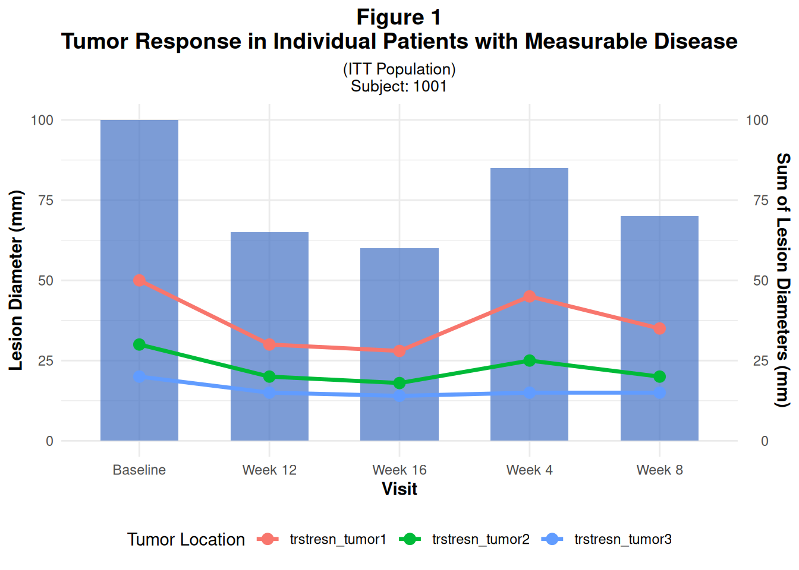
Key points:
- We used an empty
ggplot()and passed data separately to each layer.
- This is useful when we have different data frames for bars (
bar_data) and lines (bar_data_long).
32 Figure 2 – Waterfall Plot of Best Percentage Change from Baseline
Waterfall plots show each patient’s best % change from baseline in tumor size.
They’re very common in oncology to visualize response categories like CR/PR/SD/PD.
32.1 2.1 Create waterfall data
We simulate:
patientid: patient identifierpchg: best % change from baseline in sum of diametersresponse: categorical RECIST-like response (CR/PR/SD/PD)
waterfall_data <- data.frame(
patientid = paste0("PT", sprintf("%03d", 1:30)),
pchg = c(-65, -55, -48, -42, -38, -35, -30, -28, -25, -22,
-18, -15, -12, -10, -8, -5, -2, 5, 8, 12,
15, 20, 25, 30, 35, 40, 45, 50, 55, 60),
response = c(rep("CR", 2), rep("PR", 13), rep("SD", 10), rep("PD", 5))
)
waterfall_data patientid pchg response
1 PT001 -65 CR
2 PT002 -55 CR
3 PT003 -48 PR
4 PT004 -42 PR
5 PT005 -38 PR
6 PT006 -35 PR
7 PT007 -30 PR
8 PT008 -28 PR
9 PT009 -25 PR
10 PT010 -22 PR
11 PT011 -18 PR
12 PT012 -15 PR
13 PT013 -12 PR
14 PT014 -10 PR
15 PT015 -8 PR
16 PT016 -5 SD
17 PT017 -2 SD
18 PT018 5 SD
19 PT019 8 SD
20 PT020 12 SD
21 PT021 15 SD
22 PT022 20 SD
23 PT023 25 SD
24 PT024 30 SD
25 PT025 35 SD
26 PT026 40 PD
27 PT027 45 PD
28 PT028 50 PD
29 PT029 55 PD
30 PT030 60 PD32.2 2.2 Sort patients by change
To get the typical waterfall shape (bars sorted from best to worst response), we sort by pchg and then set factor levels:
waterfall_data <- waterfall_data %>%
arrange(pchg) %>%
mutate(patientid = factor(patientid, levels = patientid))
response_colors <- c(
"CR" = "#00B050",
"PR" = "#92D050",
"SD" = "#FFC000",
"PD" = "#FF0000"
)
waterfall_data patientid pchg response
1 PT001 -65 CR
2 PT002 -55 CR
3 PT003 -48 PR
4 PT004 -42 PR
5 PT005 -38 PR
6 PT006 -35 PR
7 PT007 -30 PR
8 PT008 -28 PR
9 PT009 -25 PR
10 PT010 -22 PR
11 PT011 -18 PR
12 PT012 -15 PR
13 PT013 -12 PR
14 PT014 -10 PR
15 PT015 -8 PR
16 PT016 -5 SD
17 PT017 -2 SD
18 PT018 5 SD
19 PT019 8 SD
20 PT020 12 SD
21 PT021 15 SD
22 PT022 20 SD
23 PT023 25 SD
24 PT024 30 SD
25 PT025 35 SD
26 PT026 40 PD
27 PT027 45 PD
28 PT028 50 PD
29 PT029 55 PD
30 PT030 60 PD32.3 2.3 Build the waterfall plot
geom_col()for bars
geom_hline()to draw RECIST cut-off lines (e.g. -30%, +20%)
coord_cartesian()to fix y-axis limits
p2 <- ggplot(waterfall_data, aes(x = patientid, y = pchg, fill = response)) +
geom_col(width = 0.8) +
# Baseline line at 0% change
geom_hline(yintercept = 0, linetype = "solid", color = "black", size = 0.8) +
# Typical RECIST thresholds
geom_hline(yintercept = -30, linetype = "dashed", color = "blue", size = 0.6) +
geom_hline(yintercept = 20, linetype = "dashed", color = "red", size = 0.6) +
scale_fill_manual(values = response_colors) +
labs(
title = "Figure 2
Waterfall Plot of Best Percentage Change from Baseline",
subtitle = "in Target Lesion per RECIST 1.1",
x = "Patient ID",
y = "Best % Change from Baseline in Sum of Diameters",
fill = "Response"
) +
theme_minimal() +
theme(
plot.title = element_text(hjust = 0.5, face = "bold", size = 14),
plot.subtitle = element_text(hjust = 0.5, size = 10),
axis.title = element_text(face = "bold", size = 11),
axis.text.x = element_blank(),
axis.ticks.x = element_blank(),
legend.position = "bottom"
) +
coord_cartesian(ylim = c(-80, 80))
p2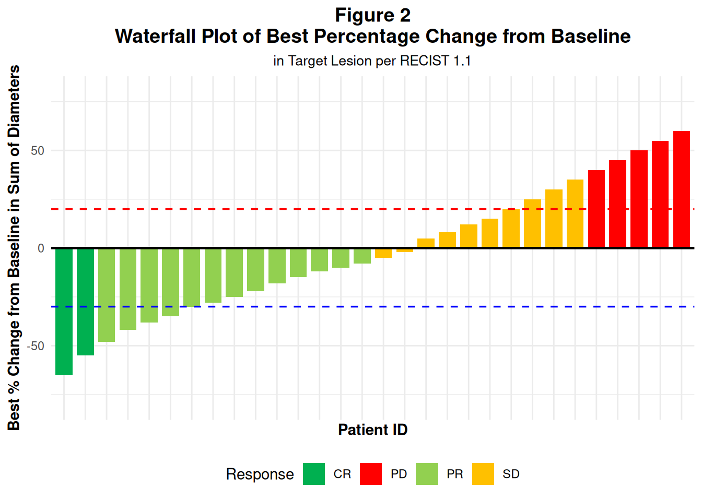
In real ADaM:
- You’d compute
pchgfrom ADTR using baseline and best post-baseline sum of diameters.
33 Figure 3 – Swimmer Plot: Duration of Response
Swimmer plots show time on treatment / response for each patient:
- Horizontal bar per patient: treatment duration
- Color: response category
- Symbols/markers: progression, death, etc.
33.1 3.1 Create swimmer data
We simulate:
start_time/end_time: treatment/response duration (months)response: CR/PR/SD/PDprogression/death: logical indicators
set.seed(123) # for reproducibility
swimmer_data <- data.frame(
patientid = paste0("PT", sprintf("%03d", 1:20)),
start_time = rep(0, 20),
end_time = c(12, 15, 8, 20, 18, 14, 10, 22, 16, 19,
7, 25, 13, 17, 11, 9, 21, 24, 15, 18),
response = sample(c("CR", "PR", "SD", "PD"), 20, replace = TRUE),
progression = c(TRUE, FALSE, TRUE, FALSE, TRUE, FALSE, TRUE, FALSE, TRUE, FALSE,
TRUE, FALSE, TRUE, FALSE, TRUE, FALSE, TRUE, FALSE, TRUE, FALSE),
death = c(FALSE, TRUE, FALSE, FALSE, FALSE, TRUE, FALSE, FALSE, FALSE, TRUE,
FALSE, FALSE, FALSE, TRUE, FALSE, FALSE, FALSE, TRUE, FALSE, FALSE)
)
# Sort by duration so longest bars at top
swimmer_data <- swimmer_data %>%
arrange(desc(end_time)) %>%
mutate(patientid = factor(patientid, levels = patientid))
swimmer_data patientid start_time end_time response progression death
1 PT012 0 25 PR FALSE FALSE
2 PT018 0 24 CR FALSE TRUE
3 PT008 0 22 PR FALSE FALSE
4 PT017 0 21 PD TRUE FALSE
5 PT004 0 20 PR FALSE FALSE
6 PT010 0 19 CR FALSE TRUE
7 PT005 0 18 SD TRUE FALSE
8 PT020 0 18 SD FALSE FALSE
9 PT014 0 17 CR FALSE TRUE
10 PT009 0 16 SD TRUE FALSE
11 PT002 0 15 SD FALSE TRUE
12 PT019 0 15 SD TRUE FALSE
13 PT006 0 14 PR FALSE TRUE
14 PT013 0 13 PR TRUE FALSE
15 PT001 0 12 SD TRUE FALSE
16 PT015 0 11 PR TRUE FALSE
17 PT007 0 10 PR TRUE FALSE
18 PT016 0 9 SD FALSE FALSE
19 PT003 0 8 SD TRUE FALSE
20 PT011 0 7 PD TRUE FALSE33.2 3.2 Build the swimmer plot
geom_segment()draws horizontal bars
- Triangles (
shape = 17) mark progression
- Crosses (
shape = 4) mark death
p3 <- ggplot(swimmer_data, aes(y = patientid)) +
# Treatment/response duration
geom_segment(
aes(x = start_time, xend = end_time,
yend = patientid, color = response),
size = 3
) +
# ▲ progression (black triangle)
geom_point(
data = swimmer_data %>% filter(progression),
aes(x = end_time),
shape = 17, size = 4, color = "black"
) +
# ✕ death (red cross)
geom_point(
data = swimmer_data %>% filter(death),
aes(x = end_time),
shape = 4, size = 4, color = "red", stroke = 2
) +
scale_color_manual(values = c(
"CR" = "#00B050", "PR" = "#92D050",
"SD" = "#FFC000", "PD" = "#FF0000"
)) +
labs(
title = "Figure 3
Swimmer Plot - Duration of Response",
subtitle = "Individual Patient Treatment Duration and Response",
x = "Time (Months)",
y = "Patient ID",
color = "Response"
) +
theme_minimal() +
theme(
plot.title = element_text(hjust = 0.5, face = "bold", size = 14),
plot.subtitle = element_text(hjust = 0.5, size = 10),
axis.title = element_text(face = "bold", size = 11),
legend.position = "bottom"
) +
annotate(
"text", x = 26, y = 21,
label = "▼ = Progression
✕ = Death",
hjust = 0, size = 3
)
p3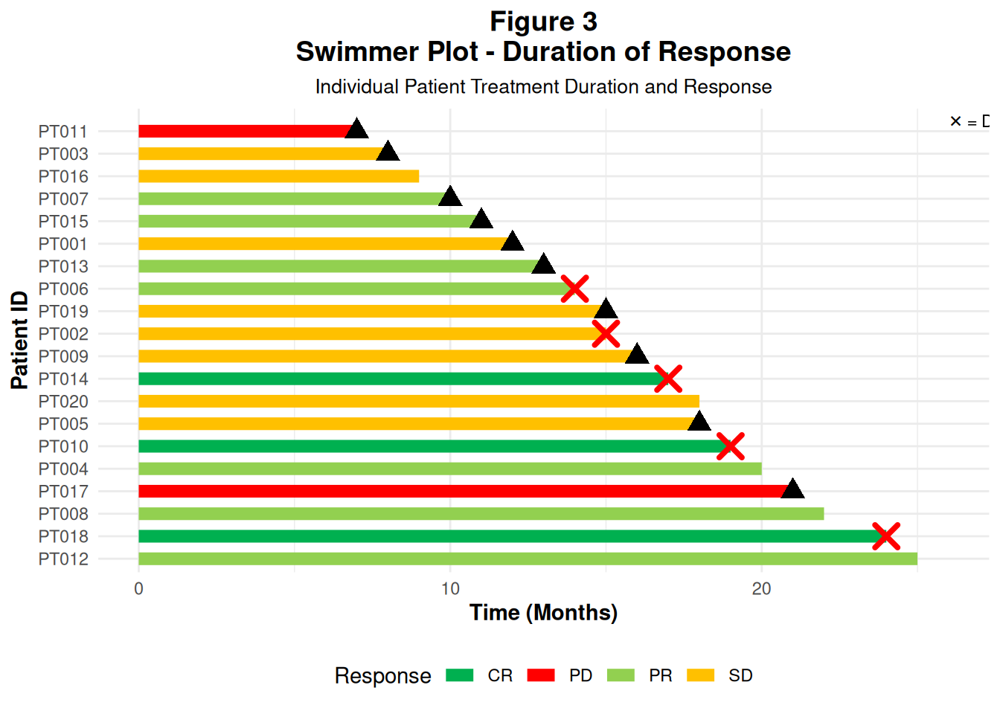
In an ADaM workflow, these durations often come from ADTTE / custom response datasets (first response date, progression date, death date, etc.).
34 Figure 4 – Spider Plot: Tumor Trajectories Over Time
Spider plots show multiple patients’ tumor trajectories on the same axes:
- x-axis: time (e.g. months from baseline scan)
- y-axis: relative tumor size (ratio vs baseline)
Each line represents one patient.
34.1 4.1 Create spider data
We create data for 15 patients, with tumor size values over time:
set.seed(123)
spider_data <- expand.grid(
patientid = paste0("PT", sprintf("%03d", 1:15)),
dur = seq(-10, 100, by = 10)
) %>%
group_by(patientid) %>%
mutate(
# Simple random trend around baseline = 1
size = 1 + rnorm(1, 0, 0.3) + (dur/100) * rnorm(1, -0.5, 0.4)
) %>%
ungroup()
spider_data# A tibble: 180 × 3
patientid dur size
<fct> <dbl> <dbl>
1 PT001 -10 0.891
2 PT002 -10 1.51
3 PT003 -10 1.02
4 PT004 -10 1.24
5 PT005 -10 0.862
6 PT006 -10 1.40
7 PT007 -10 1.17
8 PT008 -10 0.812
9 PT009 -10 1.28
10 PT010 -10 1.28
# ℹ 170 more rows- At
dur = 0we are aroundsize = 1(baseline).
- Later timepoints can go up (> 1) or down (< 1).
34.2 4.2 Build the spider plot
p4 <- ggplot(
spider_data,
aes(
x = dur, y = size,
group = patientid,
color = patientid
)
) +
geom_line(size = 1.2, alpha = 0.7) +
geom_point(size = 2, alpha = 0.8) +
# Horizontal line at baseline (1.0)
geom_hline(
yintercept = 1.0, linetype = "solid",
color = "black", size = 0.8
) +
scale_y_continuous(breaks = seq(0, 2, by = 0.20)) +
scale_x_continuous(breaks = seq(-100, 100, by = 10)) +
labs(
title = "Figure 4
Relative Change in Tumor Size",
x = "Months from Baseline Scan (Time 0)",
y = "Tumor Size Relative to Baseline"
) +
theme_minimal() +
theme(
plot.title = element_text(hjust = 0.5, face = "bold", size = 14),
axis.title = element_text(face = "bold", size = 11),
legend.position = "none"
) +
coord_cartesian(xlim = c(-10, 100), ylim = c(0, 2))
p4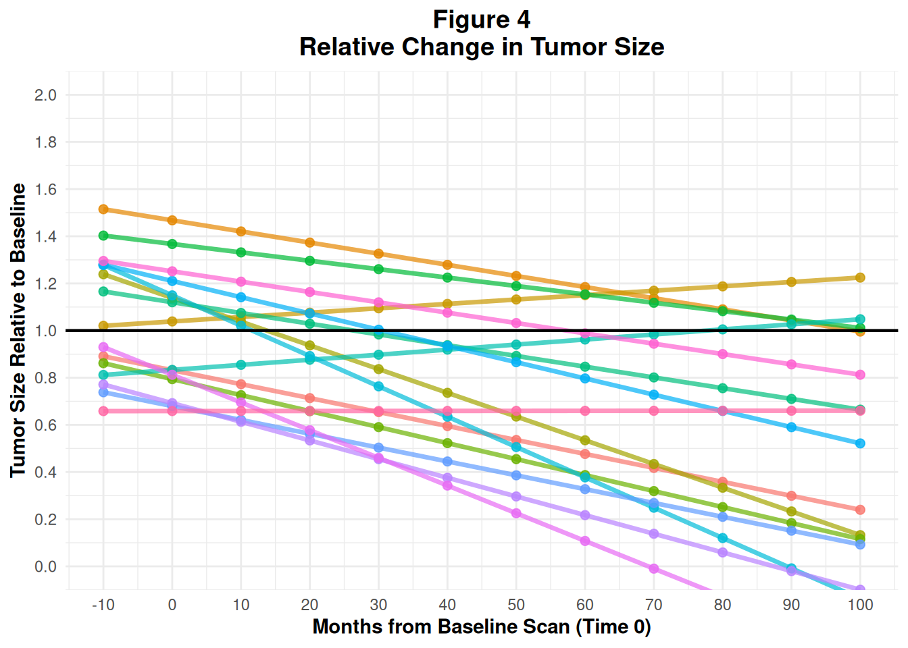
In practice, this would also come from ADTR (longitudinal tumor measurements) with a derived relative_size = AVAL / BASE.
35 Figure 5 – Kaplan–Meier Survival Curve
Kaplan–Meier (KM) plots visualize time-to-event endpoints like PFS or OS:
- Step function for survival probability over time
- Separate curve for each treatment arm
- Optionally: confidence intervals and number-at-risk table
35.1 5.1 Create KM data
We simulate:
time: event/censoring time
status: 1 = event, 0 = censored
treatment: Treatment A / Treatment B
set.seed(456)
km_data <- data.frame(
time = c(rexp(100, 0.05), rexp(100, 0.03)),
status = c(rbinom(100, 1, 0.7), rbinom(100, 1, 0.6)),
treatment = rep(c("Treatment A", "Treatment B"), each = 100)
)
head(km_data) time status treatment
1 50.245343 1 Treatment A
2 41.407858 0 Treatment A
3 9.318211 1 Treatment A
4 4.601942 1 Treatment A
5 47.967306 1 Treatment A
6 16.705099 1 Treatment A35.2 5.2 Fit the KM model and plot
We use survival::survfit() and survminer::ggsurvplot():
km_fit <- survfit(Surv(time, status) ~ treatment, data = km_data)
p5 <- ggsurvplot(
km_fit,
data = km_data,
pval = TRUE, # log-rank p-value
conf.int = TRUE, # confidence interval bands
risk.table = TRUE, # number at risk under the plot
risk.table.height = 0.25,
ggtheme = theme_minimal(),
palette = c("#E7B800", "#2E9FDF"),
title = "Figure 5
Kaplan-Meier Survival Curve",
xlab = "Time (Months)",
ylab = "Survival Probability",
legend.title = "Treatment Group",
legend.labs = c("Treatment A", "Treatment B"),
font.main = c(14, "bold"),
font.x = c(11, "bold"),
font.y = c(11, "bold"),
font.legend = c(10)
)
p5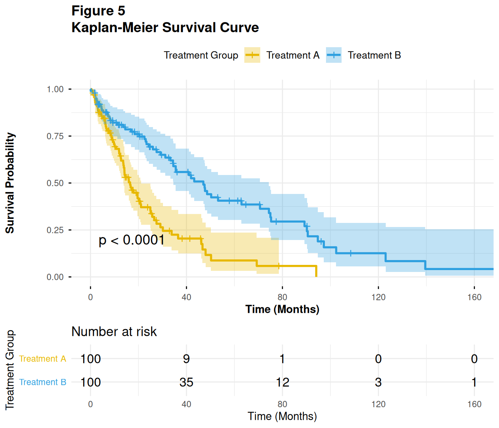
In ADaM:
- This would typically be based on ADTTE, using variables like
AVAL(time),CNSR(censor flag), andTRT01Aor similar.
36 Figure 6 – Forest Plot for Subgroup Hazard Ratios
Forest plots summarize effect estimates (e.g. hazard ratios) across subgroups:
- Each row: one subgroup
- Point: HR
- Horizontal line: 95% CI
- Vertical reference line at HR = 1
Here we use the forestploter package and its example data.
36.1 6.1 Load example data and prepare
dt <- read.csv(system.file("extdata", "example_data.csv", package = "forestploter"))
head(dt) Subgroup Treatment Placebo est low hi low_gp1
1 All Patients 781 780 1.869694 0.13245636 3.606932 0.1507971
2 Sex NA NA NA NA NA NA
3 Male 535 548 1.449472 0.06834426 2.830600 1.9149515
4 Female 246 232 2.275120 0.50768005 4.042560 0.6336414
5 Age NA NA NA NA NA NA
6 <65 yr 297 333 1.509242 0.67029394 2.348190 1.7679431
low_gp2 low_gp3 low_gp4 est_gp1 est_gp2 est_gp3 est_gp4 hi_gp1
1 0.35443249 0.3939730 1.1515801 1.181926 1.5163554 1.612725 1.949433 2.924330
2 NA NA NA NA NA NA NA NA
3 0.09953409 0.3803214 0.3213258 3.266615 0.8291053 1.642294 1.607950 3.996409
4 2.57367694 1.0229365 0.3510777 1.971712 3.9719741 1.751471 1.742973 3.965617
5 NA NA NA NA NA NA NA NA
6 0.57329716 0.8433183 2.1637576 2.447051 1.9990500 1.390913 3.136695 3.674451
hi_gp2 hi_gp3 hi_gp4
1 2.919964 3.485182 2.862447
2 NA NA NA
3 1.553593 2.573538 2.228632
4 5.439582 3.674689 3.249342
5 NA NA NA
6 3.399146 2.346744 4.299211We:
- Indent subgroup labels when there is a number in
Placebocolumn (for visual hierarchy).
- Replace
NAwith empty strings for display columns.
- Compute standard error (
se) from CI.
- Add a blank column (
" ") for the plot.
- Create a text column for HR (95% CI).
# Indent subgroup if there is a number in the placebo column
dt$Subgroup <- ifelse(
is.na(dt$Placebo),
dt$Subgroup,
paste0(" ", dt$Subgroup)
)
# NA to blank for display columns
dt$Treatment <- ifelse(is.na(dt$Treatment), "", dt$Treatment)
dt$Placebo <- ifelse(is.na(dt$Placebo), "", dt$Placebo)
# Standard error derived from CI on log scale
dt$se <- (log(dt$hi) - log(dt$est)) / 1.96
# Blank column used by forestploter for CI area
dt$` ` <- paste(rep(" ", 20), collapse = " ")
# Display column for HR (95% CI)
dt$`HR (95% CI)` <- ifelse(
is.na(dt$se), "",
sprintf("%.2f (%.2f to %.2f)", dt$est, dt$low, dt$hi)
)
head(dt) Subgroup Treatment Placebo est low hi low_gp1
1 All Patients 781 780 1.869694 0.13245636 3.606932 0.1507971
2 Sex NA NA NA NA
3 Male 535 548 1.449472 0.06834426 2.830600 1.9149515
4 Female 246 232 2.275120 0.50768005 4.042560 0.6336414
5 Age NA NA NA NA
6 <65 yr 297 333 1.509242 0.67029394 2.348190 1.7679431
low_gp2 low_gp3 low_gp4 est_gp1 est_gp2 est_gp3 est_gp4 hi_gp1
1 0.35443249 0.3939730 1.1515801 1.181926 1.5163554 1.612725 1.949433 2.924330
2 NA NA NA NA NA NA NA NA
3 0.09953409 0.3803214 0.3213258 3.266615 0.8291053 1.642294 1.607950 3.996409
4 2.57367694 1.0229365 0.3510777 1.971712 3.9719741 1.751471 1.742973 3.965617
5 NA NA NA NA NA NA NA NA
6 0.57329716 0.8433183 2.1637576 2.447051 1.9990500 1.390913 3.136695 3.674451
hi_gp2 hi_gp3 hi_gp4 se
1 2.919964 3.485182 2.862447 0.3352463
2 NA NA NA NA
3 1.553593 2.573538 2.228632 0.3414741
4 5.439582 3.674689 3.249342 0.2932884
5 NA NA NA NA
6 3.399146 2.346744 4.299211 0.2255292
HR (95% CI)
1 1.87 (0.13 to 3.61)
2
3 1.45 (0.07 to 2.83)
4 2.28 (0.51 to 4.04)
5
6 1.51 (0.67 to 2.35)36.2 6.2 Define forest theme and build the plot
We define a theme (fonts, refline color, arrow labels) and then call forest():
tm <- forest_theme(
base_size = 10,
refline_col = "red",
arrow_type = "closed",
footnote_gp = gpar(col = "blue", cex = 0.6)
)
p <- forest(
dt[, c(1:3, 20:21)],
est = dt$est,
lower = dt$low,
upper = dt$hi,
sizes = dt$se,
ci_column = 4,
ref_line = 1,
arrow_lab = c("Placebo Better", "Treatment Better"),
xlim = c(0, 4),
ticks_at = c(0.5, 1, 2, 3),
footnote = "This is the demo data. Please feel free to change
anything you want.",
theme = tm
)
plot(p)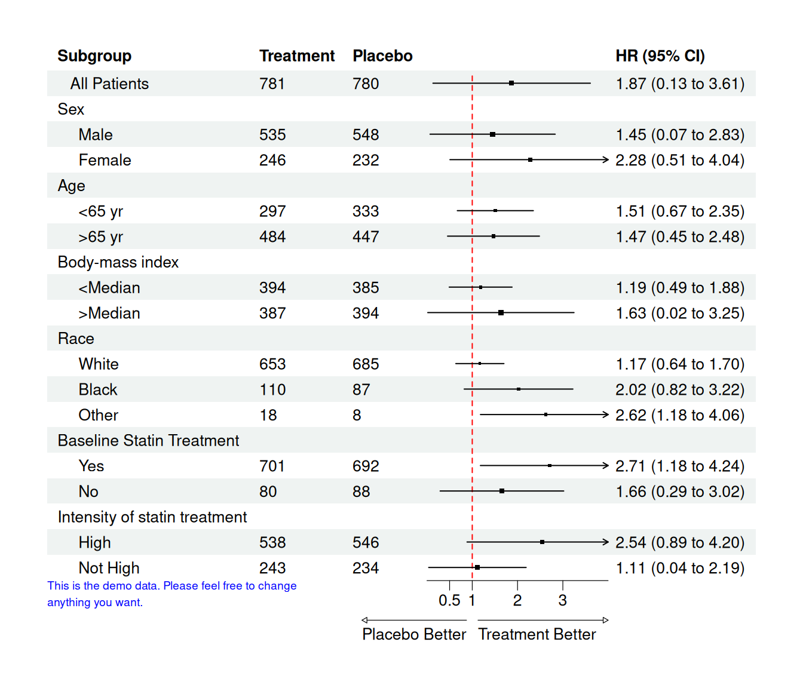
Interpretation:
- Values < 1 favor treatment, values > 1 favor placebo (depending on how you define HR).
- The arrow labels at the bottom make this direction explicit.
In real analyses, the columns est, low, hi would be generated from Cox models or other regressions per subgroup.
37 Summary and Next Steps
In this tutorial, you:
- Learned the ggplot2 grammar of graphics using ADSL, ADLB, and ADTTE style data
- Built common clinical plots:
- Subject counts by arm
- Histograms/boxplots of demographics
- Longitudinal lab plots with summary statistics
- Simple KM curves from ADTTE
- Customized scales, themes, coordinates, and annotations
- Combined
dplyr+ggplot2for tidy ADaM workflows - Wrote a small reusable plotting function tailored to ADaM
From here, you can:
- Swap the simulated data with your real ADaM datasets
- Extend functions for specific TLFs (e.g., safety labs, efficacy endpoints)
- Integrate these plots into R Markdown/Quarto CSRs or Shiny dashboards for interactive review.
Happy plotting with ggplot2 and ADaM!